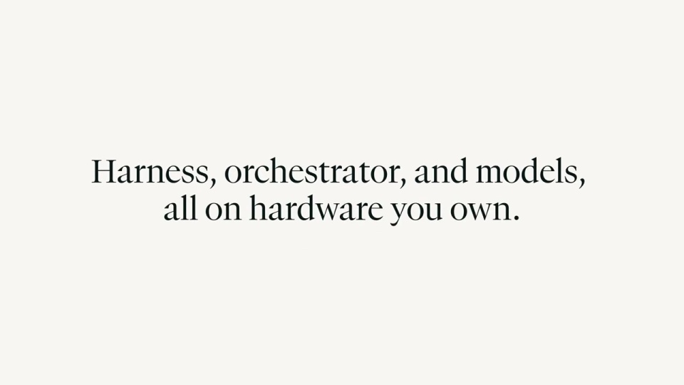
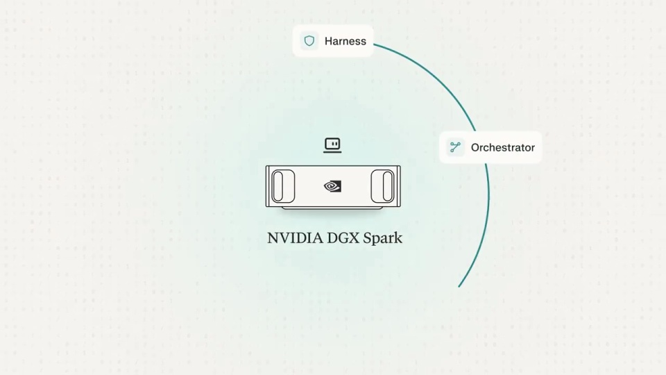
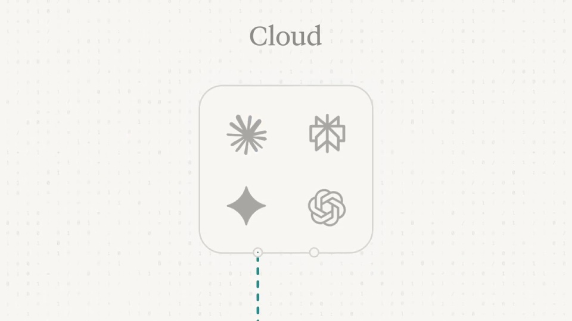
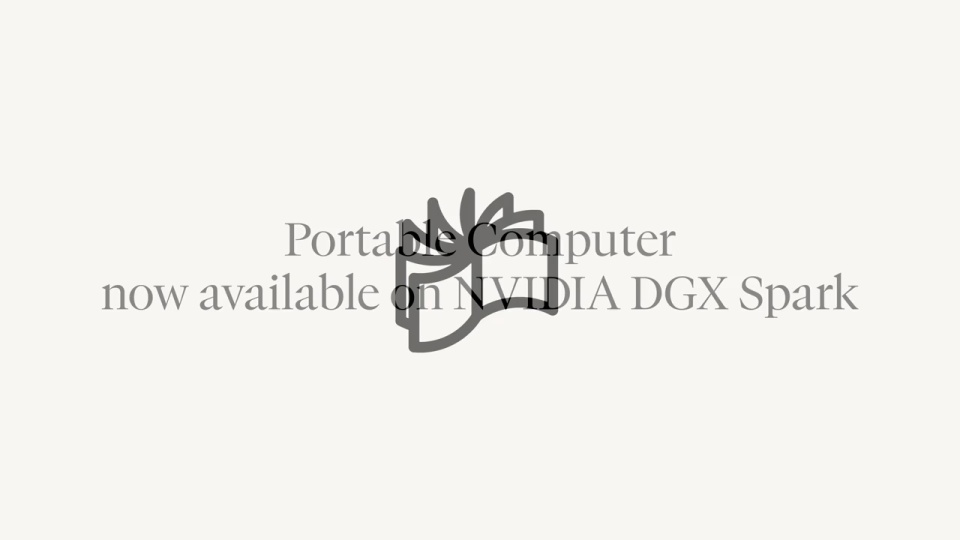

Perplexity / V261
Perplexity — Portable Computer on NVIDIA DGX Spark
先用任务说明本地设备能做什么，再用架构图说明它如何连接工具和云端。具体成果与抽象关系交替出现。
构图与编排 可播放 · 可替换内容
整体编排规则示例
查看 HTML 源码
<!doctype html><html lang="zh-CN"><meta charset="utf-8"><meta name="viewport" content="width=device-width,initial-scale=1"><title>Perplexity — Portable Computer on NVIDIA DGX Spark · sequence</title><style>html,body{margin:0;width:100%;height:100%;overflow:hidden;background:#fafaf7}canvas{display:block;width:100%;height:100%;object-fit:contain}</style><body data-mode="sequence"><canvas width="1000" height="600"></canvas><script src="data.js"></script><script src="common.js"></script><script src="scene.js"></script><script src="bridge.js"></script></body></html>画面元素本地设备工具环云模型任务框报告团队消息
MOTION LANGUAGE
动作与构图
局部动作 · 构图规则
01
设备与任务先建立联系

设备标题后进入本地选择与任务输入。浅暖画布中保持设备或本地标记，主张使用衬线字，界面字段用无衬线；青绿用于执行焦点，灰色工具节点作为辅助。
02
本地工具围绕设备排布
本地工具围绕设备排布规则示例
查看 HTML 源码
<!doctype html><html lang="zh-CN"><meta charset="utf-8"><meta name="viewport" content="width=device-width,initial-scale=1"><title>Perplexity — Portable Computer on NVIDIA DGX Spark · sequence</title><style>html,body{margin:0;width:100%;height:100%;overflow:hidden;background:#fafaf7}canvas{display:block;width:100%;height:100%;object-fit:contain}</style><body data-mode="clip" data-start="34" data-end="43"><canvas width="1000" height="600"></canvas><script src="data.js"></script><script src="common.js"></script><script src="scene.js"></script><script src="bridge.js"></script></body></html>把工具、模型、环境与执行能力围绕本地节点放置。连线汇向同一中心，节点间距足够容纳名称；当前动作沿相关连线推进，其余关系保持安静。
03
云端作为另一层加入
云端作为另一层加入规则示例
查看 HTML 源码
<!doctype html><html lang="zh-CN"><meta charset="utf-8"><meta name="viewport" content="width=device-width,initial-scale=1"><title>Perplexity — Portable Computer on NVIDIA DGX Spark · sequence</title><style>html,body{margin:0;width:100%;height:100%;overflow:hidden;background:#fafaf7}canvas{display:block;width:100%;height:100%;object-fit:contain}</style><body data-mode="clip" data-start="59" data-end="77"><canvas width="1000" height="600"></canvas><script src="data.js"></script><script src="common.js"></script><script src="scene.js"></script><script src="bridge.js"></script></body></html>云端节点在本地网络之外出现，通过一条明确连接加入工作。云审查回传后，再让本地任务继续；不要让云节点与本地工具混成同一圈。
04
三个任务穿插两次架构说明
用第一个任务建立产品印象，第二个任务解释云协作，第三个任务展示团队结果。每次架构段结束都接一个具体输出，把拓扑关系落回工作成果。
05
迁移时保留本地与云的分工
可换设备、工具和业务任务。先为每个节点写清职责，再决定哪些动作留在本地、哪些交给外部协作；结果页与对应执行节点使用一致命名。
SEQUENCE
段落与节奏
点击段落，定位到上方编排示意。



画面参考 · 离散静帧
KEEP THE RELATIONSHIPS
制作其他主题
- 可换设备和工具，保留本地执行与按需云协同边界。
制作约束
本地设备 / 工具环 / 云模型 / 任务框 / 报告 / 团队消息
- 本地工具围绕设备成环，云模型另置一层；连线表示按需提升而非数据默认外传。
- 任务示例穿插架构图，避免只有抽象拓扑。